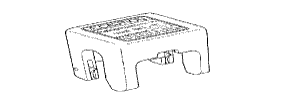
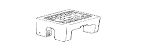
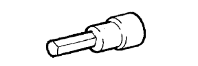
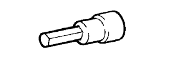
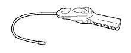

ПЕРЕДНИЙ КОНДИЦИОНЕР ВОЗДУХА > СНЯТИЕ > Подготовка

|  | 09870-00015 | Съемник быстросъемного хомута системы кондиционирования №1 |
|  | 09870-00025 | Съемник быстросъемного хомута системы кондиционирования №2 |
| Динамометрический ключ | - |
| Лента | - |
| Съемник стопорных колец | - |
 | 09040-00011 | Комплект торцевых гаечных ключей | - |
|  | (09043-20060) | Торцевая шестигранная головка 6 | - |
|  | (09043-20120) | Торцевая шестигранная головка 12 | - |
 | 09082-00040 | Электрический диагностический прибор TOYOTA | - |
 | (09013-1C130) | Торцевой ключ с головкой "TORX" T-типа T40 | - |
 | (09083-00150) | Комплект проводов для диагностического прибора | - |
|  | 95146-00180 | Галоидный течеискатель № по каталогу DENSO | - |
| Параметр / Устройство | Объем | Классификация |
| Компрессорное масло | - | ND-OIL 8 или аналогичное |